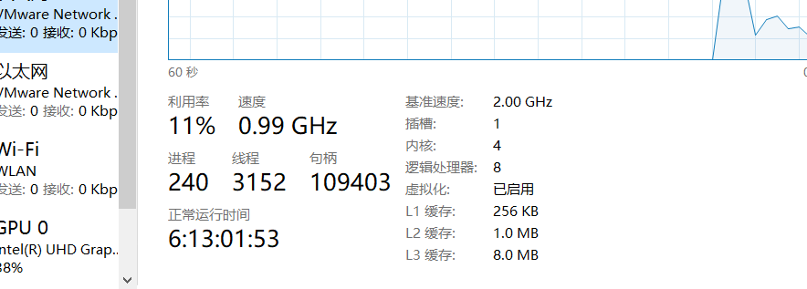

知识需要不断积累、总结和沉淀，思考和写作是成长的催化剂
异步多线程挺大一块内容，既想拆开慢慢学，又想一股脑全倒出。纠结再三，还是拆开吃透，也不至于篇幅过长，劝退许多人
本篇先做一个概述，列明一些基本概念
一、进程和线程1、进程2、线程多线程后台线程3、简言之4、适用场景二、同步和异步1、同步2、异步3、异步编程4、Async、Await5、异步操作优缺点三、小结
我们打开计算机的任务管理器，会发现系统的很多个进程，每个进程独占CPU、内存、磁盘、网络等资源，是资源分配的最小单元。多个进程之间是资源隔离的，数据之间不能直接传递。一个exe运行一次就会产生一个进程，运行多次就多个，但他们之间数据互相隔离
同样在任务管理器中我们也能看到线程，一个进程是由多个线程组成的，且至少是由一个线程，那就是主线程。图中就可以看到线程的数量要比进程大的多

衡量一个人干活快，要么是一件事干的很快，要么是他能同时干很多事。计算机就是如此，以单核CPU类比单个人，理论上单位时间上只能运行一个进程里一个线程，只能干一件事。但线程有可能在某些操作比如读写磁盘时会等待，这时候磁盘在疯狂的运转，CPU却是闲置状态，直到磁盘读写完成才CPU才继续工作，所以空闲的这个时候它可以先去干别的事情，看起开就像单核它也可以同时干很多事
一个人可以把水壶烧上水的同时去拖地，同一时刻一个人是只能干一件事的，只是在快速的频繁切换，拖地时一直想着水开了没开了没，但如果处理不当，多线程效率还低，就像你没来及去倒已经烧开的水导致干锅，还有些任务同时起来更费时，就像你一边拖地一遍广播体操一样，伸展运动123然后拖一下地，然后接着，唉？到哪里了…
后台线程不会阻止进程的关闭。当某个程序的所有前台线程完成后，进程就终止程序退出了，当然后台线程也会随即停止。在.NET中用Thread创建的线程默认都是前台线程，用线程池、BeginXXX等启用的线程都是后台线程
线程是独立执行单元，同一段代码（参数不同，任务不同）可以交给多个线程去执行，从宏观上看就是并行的执行，微观上时间片上还是串行执行的。但多核CPU就另说了，像多个人一样，一个人负责做饭，一个负责拖地
多线可以提高CPU的利用率，一个线程等待时，可以先去执行其他的任务，当然，线程之间的切换也是需要消耗资源的，开发复杂度也是会变大的，资源争夺也需要做合理的控制，也并不是所有的任务都适合多线程
后台执行耗时任务，前台界面仍需要友好的展示。在WinForm中，如果单线程（也就是主线程）如果执行耗时的操作，那么界面就会失去响应，它忙于后台的任务，无法更新用户界面的交互。这个时候可以另开一个工作线程来处理耗时的任务，主线程可以响应用户操作，也可以随时改变任务的状态
在没有界面的程序里，当一个任务有潜在的耗时时，比如等待远程服务器的响应返回，用工作线程来完成任务可以让主线程去做其他事情
复杂的计算，多线程在多核CPU上可以更快的完成任务。总之一切都是为了效率，.NET中很多暗中的多线程，比如timer，backgroudworker，webservices等，我们使用中自然而然就在利用其多线程带来的好处，在了解了基本原理后，我们需要手动创建管理明面上的多线程任务
多线程纵然可以提高你的程序流畅度，但开发调试中确实增大了难度，一方面除了要对业务划分适应多线程的处理模式，另一个方面多线程最终还是交于操作系统的调度，我们虽可以执行一些优化调度，但最终结果并不是总尽人意，线程之间的切换也会消耗资源，所以多线程的设计应该尽量简单
同步方法调用在程序继续执行之前需要等待同步方法执行完毕返回结果，程序自上而下顺序执行，没完成一个指令，在进行下一个指令。在代码调试的表现为，光标一步一步完成上一步计算后，才会进入下一行。阻塞调用线程的运行
异步方法则在被调用之后，调用线程不会等待方法的完成，会直接进入下一行，执行下一个指令，所以是非阻塞的
.NET通过委托可以实现异步调用任何方法。像上面介绍委托方法调用时，除了Invoke同步方法，还有BegInvoke异步方法，它会启用一个异步调用线程，你只需要传入委托方法的参数（可能还需要线程额外参数，如果有必要的话）就可以以后台线程的方式执行方法。在代码上执行到BeginInvoke时，会立即返回，不等待异步调用的完成，它返回一个IAsyncResult类型，你可以用它来监视调用的进度。和BegInvoke成对的EndInvoke方法可以用于获取异步调用的结果，这是会阻塞的。具体将在下一篇代码实例中讲解BeginInvoke的常用套路
Async、Await是.NET4.5新增的异步编程方式，为了简化异步程序的编写。上面的说的异步调用方式就是经典的APM异步编程模型，基于IAsyncResult接口实现BeginXXX和EndXXX类似的方法。在.NET4.5中可以使用Async方式，通过Async关键字标记方法为异步方法，然后在方法内部通过await标记后面的方法耗时，调用线程到这里就回去吧。我们就可以不用APM方式，用async方式可以轻松将一个方法编程异步方法
public async void Async1()
{
HttpWebRequest myReq = (HttpWebRequest)WebRequest.Create("http://cnblogs.com/");
await myReq.GetRequestStreamAsync();
//to do
}
异步操作相比较于多线程，减少了死锁的可能，在设计良好的情况下，异步函数可以不必使用共享变量，可以减少出错的几率。但起步也是难以调试的，只有尽量减少其复杂度
这篇主要介绍一些概念，接下来硬核编码部分就不会再啰嗦这些，上面有遗漏的，在编码中会捎带一些。基本就这些吧，TaskFactory、ThreadPool、Task、Parallel等都是对Thread的封装，过一遍代码，了解常用方法套路就可以。不会面面俱到每个接口都试一下，微软官网文档更全面（吹一波，.NET微软大佬的技术支持还是杠杠的）。后面主要搞一些成熟的套路，比如线程的同步，线程取消，异常处理，线程安全、锁机制等可用的编码方式。
OK，那下期见，去给FPX打气去，拜了个拜~
可关注主页公号获取更多
兽人永不为奴